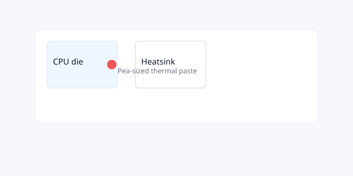

When to reapply thermal paste
If your laptop runs hotter than usual even after cleaning, or if it's several years old, replacing thermal paste can improve temperatures.
Procedure
- Power off and remove power sources.
- Remove heatsink carefully; consult model guide for screw order.
- Wipe old thermal compound from CPU/GPU and heatsink with lint-free cloth and isopropyl alcohol.
- Apply a pea-sized drop of new thermal paste to the center of the CPU die.
- Reattach heatsink, tightening screws in a criss-cross pattern to distribute pressure evenly.
- Reassemble and test temperatures under load (e.g., run a stress test and monitor with hwmonitor or similar tool).
